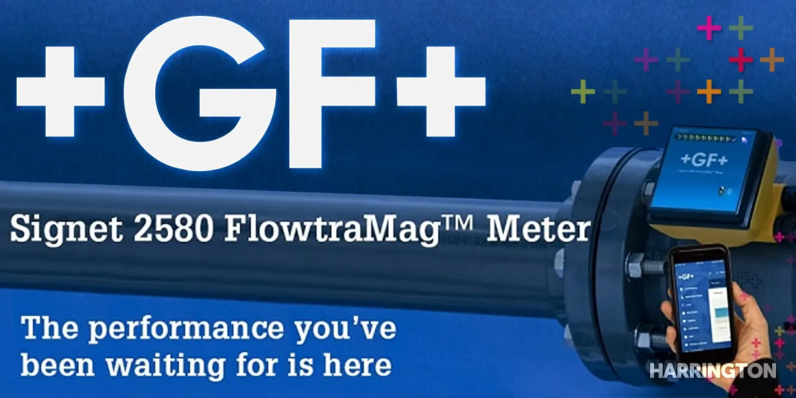

Signet 2580 FlowtraMag
A full-bore magnetic flow meter with no moving parts and short straight-run requirements.

GF Piping Systems has introduced the Signet 2580 FlowtraMag full-bore magnetic flowmeter. This sensor out of the Georg Fischer factory in Southern California is designed specifically for high-accuracy flow measurement in short pipe runs, as low as 3× upstream and 2× downstream. High accuracy is achieved for these problematic runs with a new sensor design that has shorter inlet and outlet pipe length requirements and certified factory calibration.
The FlowtraMag is constructed with a PVC body and titanium electrodes, making it corrosion resistant and a lightweight alternative to heavier models on the market. Available in 1 in, 2 in, and 4 in PVC Schedule 80, it offers an accuracy rating of ±1% of reading and repeatability of ±0.5%. It covers flow velocities as low as 0.07 ft/s and as high as 33 ft/s, giving it better than a 470:1 turndown ratio.
Monitoring is provided via broad communications capabilities across multiple platforms: digital (S3L), frequency, analog 4 to 20 mA, smartphone and tablet over Bluetooth, PC via the 0252 configuration tool, DCS, and PLC. Users can configure and calibrate the 2580 with the GF Configuration Tool Bluetooth app. No jumpers or switches to mess with.
Key features
- No moving parts
- Lighter in weight compared to similar sized models
- Reduced straight run requirements, ideal for final effluent lines, wellheads, and skids
- Factory calibrated with certificate, ±1% of reading accuracy
- Partially filled pipe detection status indicator
- Reverse flow direction configurable with the 0252 configuration tool or Bluetooth app
- One device with three outputs: frequency or digital (S3L), and analog 4 to 20 mA (active or passive)
Target applications
Chemical processing and production, cooling towers, filtration systems, water and wastewater treatment, process control, reverse osmosis, and scrubber systems.
Questions about your line? A specialist answers the phone around the clock.
Back to articles